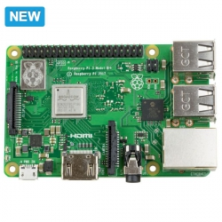

Raspberry Pi 3 Model B+ 1GB RAM
Артикул: RASP0001
Цена: 4000 руб.
Технические характеристики
| Процессор: | Broadcom BCM2837B0, Cortex-A53 64-bit SoC @ 1.4GHz |
|---|---|
| Размеры: | 85 x 56 x 17 mm |
Описание товара
Raspberry Pi 3 Model B+ 1GB RAM - обновленная версия Raspberry Pi 3 построенная на чипе Broadcom BCM2837B0 4-х ядерным ARM Cortex-A53 с тактовой частотой 1.4GHz. Плата оборудованна двухдиапазонным (2,4/5 ГГц) адаптером беспроводной связи Wi-Fi с поддержкой стандартов IEEE 802.11b/g/n/ac, Bluetooth 4.2, BLE. Также Raspberry Pi 3 Mode B+ оснащена быстрым портом Ethernet(с максимальная пропускной способностью 300 Мбит / с).